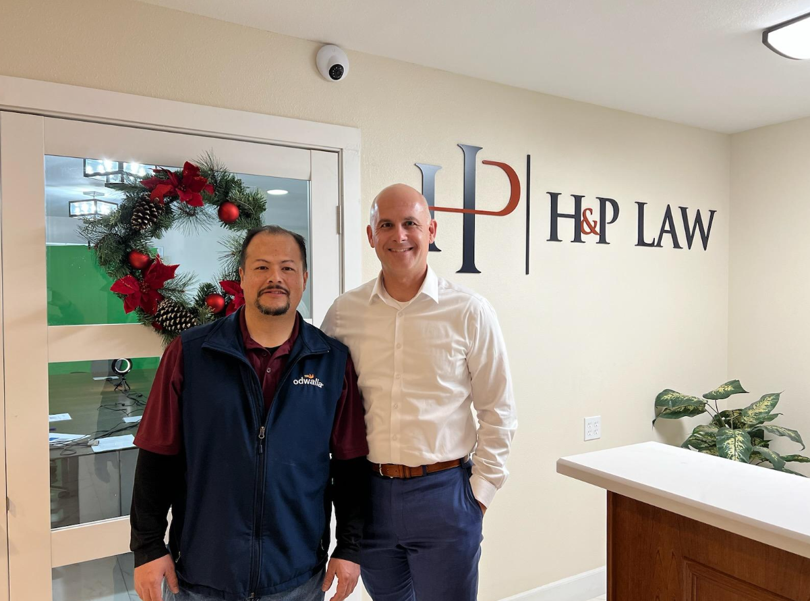

Vegas Collision Rights Explained
Understanding your rights after a collision begins with knowing that the facts matter. The location, traffic conditions, driver conduct, witness observations, and available documentation can all affect how responsibility is evaluated. Speaking with Las Vegas Personal Injury Lawyer may help clarify what information is useful, how deadlines may apply, and why early organization can make the process easier to manage. In many cases, guidance from Las Vegas Personal Injury Lawyer can also help prevent common mistakes when communicating with insurers or other involved parties.
Medical follow-up is also important, even if discomfort appears manageable at first. Some injuries develop gradually, and treatment records can connect symptoms to the incident while supporting a clearer picture of recovery needs. When expenses, missed work, or ongoing care become concerns, Las Vegas Personal Injury Lawyer can provide insight into possible next steps and the types of documentation that may be relevant. Working with Las Vegas Personal Injury Lawyer may also help individuals understand settlement discussions, liability questions, and the importance of preserving evidence before it becomes difficult to obtain.
Insurance claims can involve requests for statements, repair estimates, medical summaries, and other records that may feel overwhelming during recovery. It is wise to respond carefully, keep copies of communications, and avoid guessing about details that are not fully known. A consultation with Las Vegas Personal Injury Lawyer can help injured people approach the situation with greater confidence, protect their interests, and make informed decisions based on the specific circumstances of the collision.

Desert Highway Injury Counsel
When an unexpected injury disrupts daily life, clear guidance can make the next steps feel more manageable. Medical appointments, insurance communications, time away from work, and ongoing discomfort often create pressure at the same time important decisions must be made. A conversation with Las Vegas Personal Injury Lawyer can help identify practical priorities, while support from Las Vegas Personal Injury Lawyer may provide a structured way to preserve records, understand procedures, and avoid unnecessary delays.
Every matter depends on its specific circumstances, including how the harm occurred, what notice may have existed, and how the injury affects the person over time. Photos, medical notes, repair records, incident reports, and communication logs can all help create a more complete picture. By working with Las Vegas Personal Injury Lawyer, injured individuals can better assess the information available, and guidance from Las Vegas Personal Injury Lawyer can help explain how claims are typically evaluated by insurers or other responsible parties.
Professional assistance is also valuable because the process can involve deadlines, detailed forms, and discussions that may influence the outcome. Having a knowledgeable advocate can reduce confusion, promote careful preparation, and allow the injured person to focus on recovery. For those seeking a steady approach after harm occurs, Las Vegas Personal Injury Lawyer can serve as a helpful resource for understanding options and moving forward with greater confidence.
Casino Resort Accident Claims
Large hospitality and entertainment properties are designed to welcome heavy foot traffic, but that activity can also create conditions where injuries occur. Wet walkways, uneven surfaces, crowded entrances, defective railings, elevator issues, or delayed maintenance may raise questions about whether reasonable care was taken. After an incident, contacting Las Vegas Personal Injury Lawyer can help an injured person understand what information may be important, and guidance from Las Vegas Personal Injury Lawyer may support a more organized approach to preserving details before they are lost.
The period after an injury often involves medical evaluations, incident reports, photos, witness information, and conversations with insurers or property representatives. Keeping records of treatment, expenses, missed work, and communications can make it easier to present a clear account of what happened and how the injury has affected daily life. Working with Las Vegas Personal Injury Lawyer may help identify responsible parties, while Las Vegas Personal Injury Lawyer can assist with evaluating whether the available evidence supports a demand for compensation.
Every situation depends on its own facts, including the cause of the hazard, how long it existed, whether staff knew or should have known about it, and whether proper warnings or repairs were provided. Because deadlines and procedural requirements can affect the ability to pursue recovery, timely action is important. A consultation with Las Vegas Personal Injury Lawyer can provide direction, protect important rights, and help an injured person move forward with greater confidence.
H&P Law
H&P Law
710 S 9th St, Las Vegas, NV 89101
(702) 718-7449